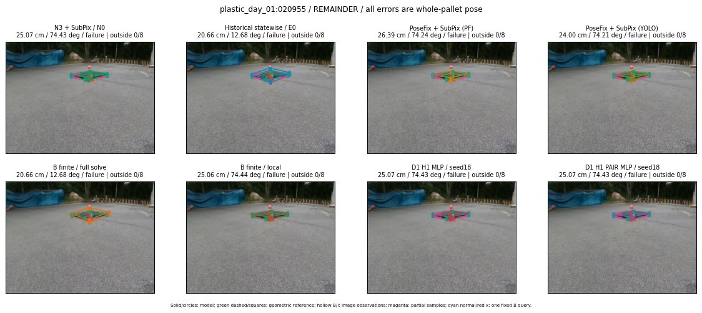

Whole-pallet pose errors; reference is a fixed geometric annotation, not certified physical GT.

Scores are uncalibrated logits. N0 retention is a numerical pose alias; it differs from H0 none or B fallback. B/I and profiles in baseline/B panels are original observations; L panels use new D1 observations. Only one deterministic supported B query is shown in a thumbnail; full support counts are below. Grey privacy rectangles edit the display copy only and are unrelated to O states; all observations were measured on original pixels. Thumbnails use JPEG quality85; detailed scientific panels are PNG.
| Method | Whole pose / cm, deg | Actual source | Selected ID | Score | Archived candidates | Eligible | N0 retained | H0 none | Fallback | Finite profiles |
|---|---|---|---|---|---|---|---|---|---|---|
| Raw YOLO + F | 30.98 cm / 74.22 deg / failure | OTHER | None | N/A | N/A | N/A | False | N/A | None | N/A |
| N3 + SubPix / N0 | 25.07 cm / 74.43 deg / failure | N0 | None | N/A | N/A | N/A | True | N/A | None | N/A |
| Historical statewise / E0 | 20.66 cm / 12.68 deg / failure | E0_REGENERATED | None | N/A | N/A | N/A | False | N/A | False | N/A |
| PoseFix raw | 13.72 cm / 74.21 deg / failure | OTHER | None | N/A | N/A | N/A | False | N/A | None | N/A |
| PoseFix + SubPix (PF) | 26.39 cm / 74.24 deg / failure | OTHER | None | N/A | N/A | N/A | False | N/A | False | historical support records 9; finite audit N/A |
| PoseFix + SubPix (YOLO) | 24.00 cm / 74.21 deg / failure | OTHER | None | N/A | N/A | N/A | False | N/A | False | historical support records 9; finite audit N/A |
| Historical L, seed18 | 25.07 cm / 74.43 deg / failure | N0 | N0 | N/A | 104 | 104 | True | True | True | N/A |
| Historical B fixed bank | 20.66 cm / 12.68 deg / failure | OTHER | LOGGED/G13/SWAPPED_WD/outline_consider/189 | N/A | N/A | N/A | False | N/A | False | N/A |
| Historical B full | 20.66 cm / 12.68 deg / failure | OTHER | LOGGED/G13/SWAPPED_WD/outline_consider/189 | N/A | N/A | N/A | False | N/A | False | N/A |
| Historical edge full | 20.66 cm / 12.68 deg / failure | OTHER | LOGGED/G13/SWAPPED_WD/outline_consider/189 | N/A | N/A | N/A | False | N/A | False | N/A |
| Historical AB full | 20.66 cm / 12.68 deg / failure | OTHER | NEW/AB/SWAPPED_WD/h0/LOGGED/G13/SWAPPED_WD/outline_consider/189/PROPOSED_NATIVE_YAW_0 | N/A | N/A | N/A | False | N/A | False | N/A |
| B finite / fixed bank | 20.66 cm / 12.68 deg / failure | OTHER | LOGGED/G13/SWAPPED_WD/outline_consider/189 | N/A | N/A | N/A | False | N/A | False | 0/0 |
| B finite / full solve | 20.66 cm / 12.68 deg / failure | OTHER | NEW_FINITE/B/SWAPPED_WD/h2/G13/ORIGINAL_WD/sample/29/PROPOSED_NATIVE_YAW_2 | N/A | N/A | N/A | False | N/A | False | 0/0 |
| B finite / local | 25.06 cm / 74.44 deg / failure | OTHER | NEW_FINITE/B/ORIGINAL_WD/h0/N0_LOCAL_SAME_PHYSICAL_POSE/ORIGINAL_WD | N/A | N/A | N/A | False | N/A | False | 0/0 |
| Edge finite / full solve | 20.66 cm / 12.68 deg / failure | OTHER | NEW_FINITE/edge/SWAPPED_WD/h2/G13/ORIGINAL_WD/sample/29/PROPOSED_NATIVE_YAW_2 | N/A | N/A | N/A | False | N/A | False | 0/0 |
| D0 H0 MLP / seed18 | 9.00 cm / 67.47 deg / failure | OTHER | WD0/ORIGINAL_WD/sample/10 | 0.5167491436004639 | 90 | 90 | False | False | False | N/A |
| D0 H0 MLP / seed19 | 9.00 cm / 67.47 deg / failure | OTHER | WD0/ORIGINAL_WD/sample/10 | 0.39426010847091675 | 90 | 90 | False | False | False | N/A |
| D0 H0 MLP / seed20 | 25.07 cm / 74.43 deg / failure | N0 | N0 | -2.239729881286621 | 90 | 90 | True | True | True | N/A |
| D0 H1 MLP / seed18 | 9.00 cm / 67.47 deg / failure | OTHER | WD0/ORIGINAL_WD/sample/11 | -4.872693061828613 | 90 | 90 | False | False | False | N/A |
| D0 H1 MLP / seed19 | 25.07 cm / 74.43 deg / failure | N0 | N0 | -3.1953554153442383 | 90 | 90 | True | False | False | N/A |
| D0 H1 MLP / seed20 | 9.00 cm / 67.47 deg / failure | OTHER | WD0/ORIGINAL_WD/sample/10 | -4.103092670440674 | 90 | 90 | False | False | False | N/A |
| D1 H0 MLP / seed18 | 25.07 cm / 74.43 deg / failure | N0 | N0 | 4.723923683166504 | 90 | 90 | True | True | True | N/A |
| D1 H0 MLP / seed19 | 25.07 cm / 74.43 deg / failure | N0 | N0 | 4.420014381408691 | 90 | 90 | True | True | True | N/A |
| D1 H0 MLP / seed20 | 25.07 cm / 74.43 deg / failure | N0 | N0 | 3.9156768321990967 | 90 | 90 | True | True | True | N/A |
| D1 H1 MLP / seed18 | 25.07 cm / 74.43 deg / failure | N0 | N0 | -3.4748780727386475 | 90 | 90 | True | False | False | N/A |
| D1 H1 MLP / seed19 | 25.07 cm / 74.43 deg / failure | N0 | N0 | -3.4781064987182617 | 90 | 90 | True | False | False | N/A |
| D1 H1 MLP / seed20 | 25.07 cm / 74.43 deg / failure | N0 | N0 | -3.0989179611206055 | 90 | 90 | True | False | False | N/A |
| D1 H1 ROLE AFFINE / seed18 | 25.07 cm / 74.43 deg / failure | N0 | N0 | -0.44368577003479004 | 90 | 90 | True | False | False | N/A |
| D1 H1 ROLE AFFINE / seed19 | 25.07 cm / 74.43 deg / failure | N0 | N0 | -0.37023741006851196 | 90 | 90 | True | False | False | N/A |
| D1 H1 ROLE AFFINE / seed20 | 25.07 cm / 74.43 deg / failure | N0 | N0 | -0.6306907534599304 | 90 | 90 | True | False | False | N/A |
| D1 H1 PAIR MLP / seed18 | 25.07 cm / 74.43 deg / failure | N0 | N0 | -2.7709779739379883 | 90 | 2 | True | False | False | N/A |
| D1 H1 PAIR MLP / seed19 | 25.07 cm / 74.43 deg / failure | N0 | N0 | -2.6221089363098145 | 90 | 2 | True | False | False | N/A |
| D1 H1 PAIR MLP / seed20 | 25.07 cm / 74.43 deg / failure | N0 | N0 | -3.5826377868652344 | 90 | 2 | True | False | False | N/A |
| D1 H1 PAIR ROLE AFFINE / seed18 | 25.07 cm / 74.43 deg / failure | N0 | N0 | -1.3469334840774536 | 90 | 2 | True | False | False | N/A |
| D1 H1 PAIR ROLE AFFINE / seed19 | 25.07 cm / 74.43 deg / failure | N0 | N0 | -1.7502930164337158 | 90 | 2 | True | False | False | N/A |
| D1 H1 PAIR ROLE AFFINE / seed20 | 25.07 cm / 74.43 deg / failure | N0 | N0 | -1.4959466457366943 | 90 | 2 | True | False | False | N/A |
| Regenerated common E0 | 20.66 cm / 12.68 deg / failure | E0_REGENERATED | E0_REGENERATED | N/A | N/A | N/A | False | N/A | False | N/A |